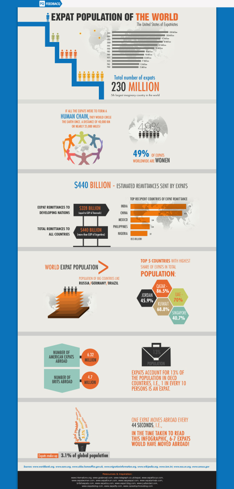

News >> November 2014
Just How Big Is the TCK Population?

While this infographic, "World Expat Population: The Numbers" from FeedbacQ's blog (as of August 2013) may not provide definitions or clarity about the age ranges of the population studied, it does provide a way to visualize just how big the expat population may be. "Expats" as a term is also not synonymous with "Third Culture Kids" because, among other reasons, expats are not necessarily individuals who spent their developmental years with globally mobile lifestyles.
Nevertheless, Here are some interesting numbers about the growing tribe of expats:
- In 1960, there were only 73 million expats. As of 2013, there are 230 million expats!
- Expats make up 3.1% of the global population.
- If all expats were to form a human chain, they would circle the earth one time. This is a distance of 40,000 km or almost 25,000 miles.
- About half, 49%, of expats are women.
- The top 5 countries that receive expat remittances are (starting from the country that receives the greatest amount): India, China, Mexico, Philippines, and Nigeria.
- The top 5 countries with the highest share of expats in their total population are: Qatar, the U.A.E., Kuwait, Jordan and Singapore.
- There are 6.32 million "American expats" (presumably from the USA) and 4.7 "Brits" abroad.
- One expat moves every 44 seconds.
These numbers aren't far from another source's. According to the Population Division of the United Nations Department of Economic and Social Affairs (DESA) and the Organisation for Economic Co-operation and Development(OECD), there are "232 million international migrants... living in the world today."
In Pico Iyer's TedGlobal talk, "Where is Home" in June 2013, he refers to a growing tribe of people "living in countries not their own" numbering 220 million. Iyer visualizes this number in the following way: "... if you took the whole population of Canada and the whole population of Australia and then the whole population of Australia again and the whole population of Canada again and doubled that number, you would still have fewer people than belong to this great floating tribe." Iyer also talks about "the number of us who live outside the old nation-state categories," a population that increased by "64 million just in the last 12 years, that soon there will be more of us than there are Americans."
These are astounding numbers indeed about a "floating tribe" who represent, in Iyer's terms, "the fifth-largest nation on Earth."
No portion of this article may be republished without permission by TCKid or author. All copyrights reserved to their respective owners.
Posted in Uncategorized
Tagged with Military brats